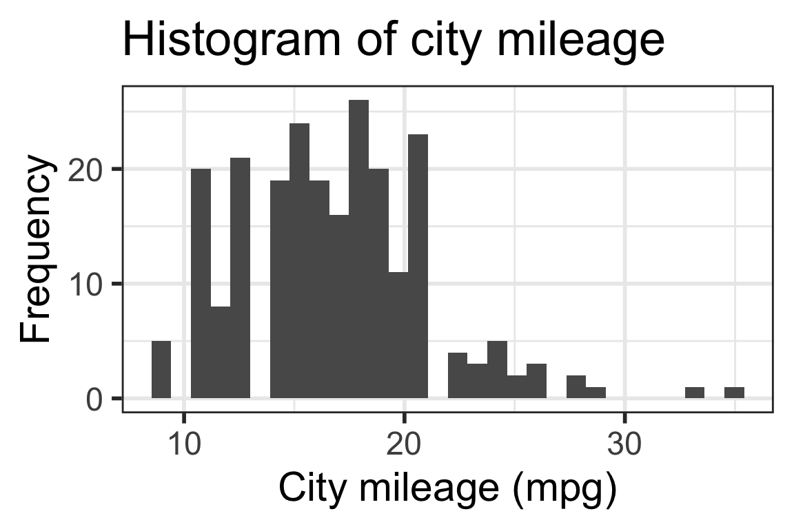
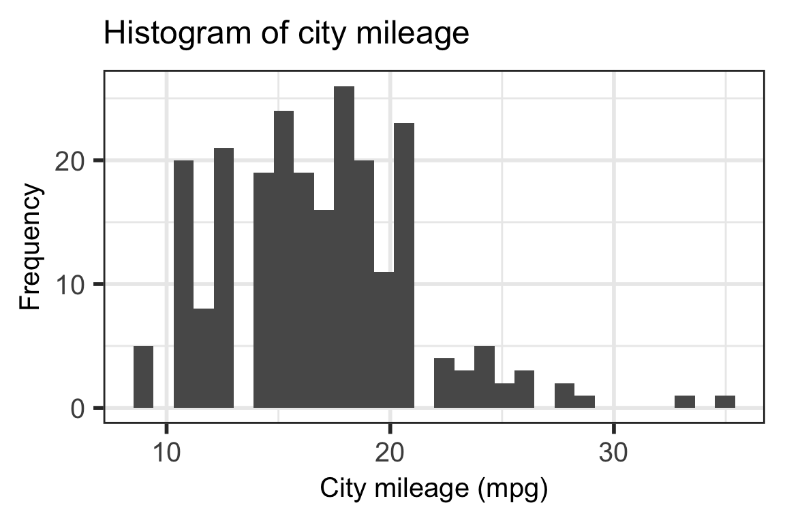

Choose one of the “One variable” geoms that would work well for the variable you chose (discrete or continuous options)
Make a plot for the variable!
05:00
We can add more to plots!
We can change labels!
ggplot(mpg, aes(cty)) +geom_histogram() +labs(x ="City mileage (mpg)", y ="Frequency", title ="Histogram of city mileage")
`stat_bin()` using `bins = 30`. Pick better value with `binwidth`.

Adding more to plots!
Increase (or decrease) text size so we can read it / it fits nicely!
ggplot(mpg, aes(cty)) +geom_histogram() +labs(x ="City mileage (mpg)", y ="Frequency", title ="Histogram of city mileage") +theme(axis.text =element_text(size =15), axis.title =element_text(size =15), title =element_text(size =15))
`stat_bin()` using `bins = 30`. Pick better value with `binwidth`.

Take a moment
To add labels to your plot and change the text size if you want
If you have time, look up help on the element_text() function